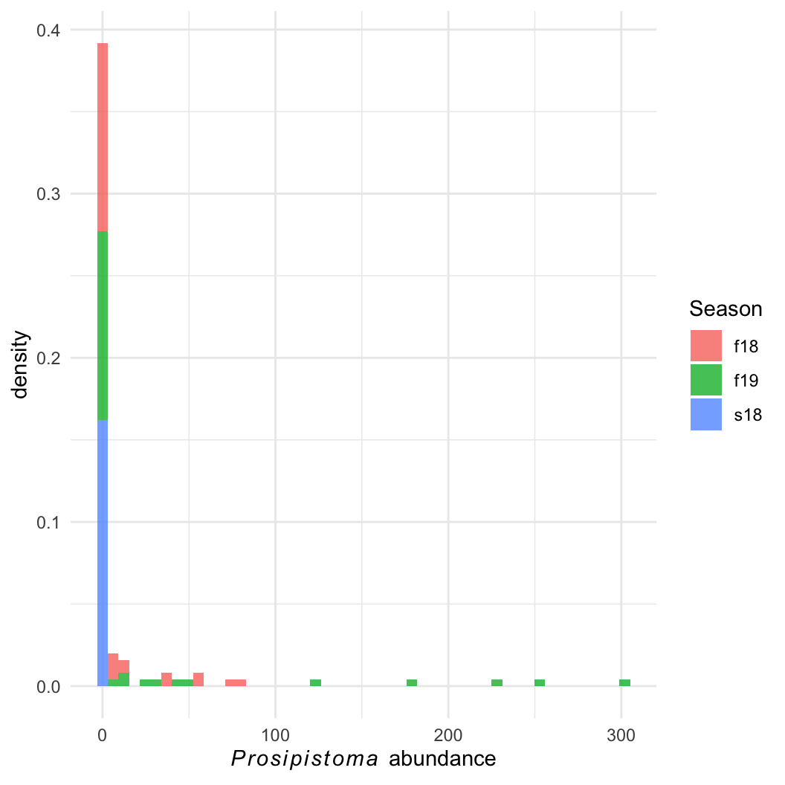
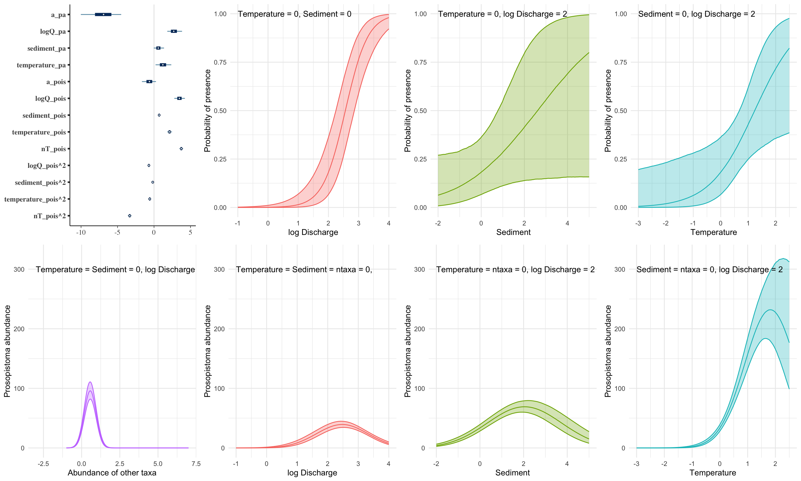
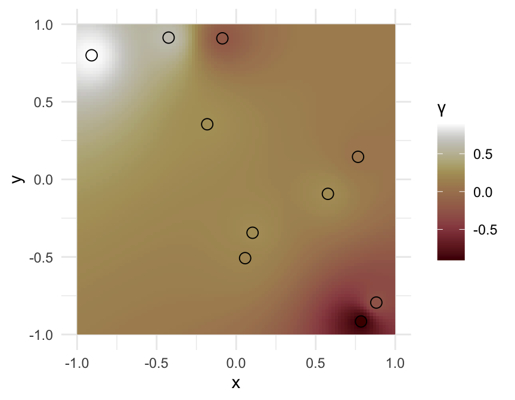

Advanced Models
Lauren Talluto
12.12.2024
Chapter 1: An abundance model for Prosopistoma
Indroducing Prosopistoma peregrinum

Nearly extinct, known from only 3 rivers in Europe.
Question: What habitat features are important for
maintaining large populations?
Prosopistoma abundance
Question: What habitat features are important for
maintaining large populations?
Prosopistoma abundance

Proso species distribution model
Easier question: What determines
Prosopistoma presence and absence?
We can build an SDM using a binomial
presence-absence model
Proso species distribution model
data {
int <lower = 1> n; // number of data points
int <lower = 1> k; // number of variables
int <lower = 0, upper = 1> pres_abs [n];
matrix [n, k] X;
}
parameters {
real a;
vector [k] B;
}
transformed parameters {
vector <lower = 0, upper = 1> [n] theta;
prob_pres = inv_logit(a + X * B);
}
model {
pres_abs ~ binomial(1, theta);
a ~ normal(0, 10);
B ~ normal(0, 5);
}
Proso abundance
We can imagine a two-step process:
Q1: Is the site suitable?
\[ pres\_abs \sim
\mathrm{Binomial}(\theta) \]
Q2: If suitable, how many Proso are there?
\[ count \sim \mathrm{Poisson}(\lambda)
\]
Problem: An observed count of zero can be generated
in two ways! (Binomial or Poisson)
Proso abundance
Problem: An observed count of zero can be generated
in two ways! (Binomial or Poisson)
We need the addition rule and the product
rule from day 1!
Product rule:
If \(count > 0\), we know that
the species is present (with probability \(\theta\)) and it has a
poisson probability, so the total probability is \(\theta \times \mathcal{P}(count |
\lambda)\).
Addition rule:
If \(count = 0\), either the site is
unsuitable (with probability \(1-\theta\)) or it is
suitable (prob \(\theta\))
and it has a poisson count of zero.: \((1- \theta) + \theta \times \mathcal{P}(0 |
\lambda)\)
Proso abundance
This is a zero-inflated model, a special case of a
finite mixture model
\[
pr(count_i | \theta,\lambda) =
\begin{cases}
(1 - \theta) + \theta \times \mathcal{P}(0 | \lambda) & &
count_i = 0 \\
\theta \times \mathcal{P}(count_i | \lambda) & & count_i
> 0 \\
\end{cases}
\]
Finite mixtures
More generally, if an observation \(y_i\) comes from a mixture of \(n\) distributions, each with parameters
\(\theta_j\) and with mixing proportion
\(\lambda_j\):
\[
pr(y_i | \Theta) = \sum_{j=1}^n \lambda_j \mathcal{D}(y_i |
\theta_j)
\]
Finite mixtures
More generally, if an observation \(y_i\) comes from a mixture of \(n\) distributions, each with parameters
\(\theta_j\) and with mixing proportion
\(\lambda_j\)…
We can of course fit a regression with a link function and covariates
to each distribution!
\[
\begin{aligned}
pr(y_i | \Theta) & = \sum_{j=1}^n \lambda_j \mathcal{D}(y_i |
\eta_{ij}, \theta_j) \\
\eta_{ij} & = \mathcal{f}_j^{-1}(a_j +
\mathbf{X}_{ij}\mathbf{B}_j)
\end{aligned}
\]
Fitting proso abundance
// file: proso_mixture.stan
data {
// we split the dataset into zeros and not-zeros
// we also allow two sets of covariates, one for presence-absence and one for nonzero counts
int <lower = 0> n_zeros;
int <lower = 0> n_counts;
int <lower = 1> k_pa;
int <lower = 1> k_pois;
// four covariate matrices:
// observed zeros, presence-absence process
// observed nonzeros, presence-absence process
// observed zeros, poisson (count) process
// observed nonzeros, poisson process
matrix [n_zeros, k_pa] X_zeros_pa; // binomial process, observed zeros
matrix [n_counts, k_pa] X_count_pa; // binomial process, observed nonzeros
matrix [n_zeros, k_pois] X_zeros_pois; // poisson process, observed zeros
matrix [n_counts, k_pois] X_count_pois; // poisson process, observed zeros
// the observed nonzero counts
int <lower = 1> counts [n_counts];
// prior hyperparams
real a_pa_scale;
real B_pa_scale;
real a_pois_scale;
real B_pois_scale;
}
parameters {
// one set of linear parameters for determining the probability of presence
real a_pa;
vector [k_pa] B_pa;
// a second set of parameters for determining the count if present
real a_count;
vector [k_pois] B_count;
}
transformed parameters {
// first, we have a probability of presence and an expected count for each observed zero
vector <lower = 0, upper = 1> [n_zeros] prob_pres_zeros;
vector <lower = 0> [n_zeros] lam_zeros;
// then we have the same for each observed (nonzero) count
vector <lower = 0, upper = 1> [n_counts] prob_pres_counts;
vector <lower = 0> [n_counts] lam_counts;
prob_pres_zeros = inv_logit(a_pa + X_zeros_pa * B_pa);
lam_zeros = exp(a_count + X_zeros_pois * B_count);
prob_pres_counts = inv_logit(a_pa + X_count_pa * B_pa);
lam_counts = exp(a_count + X_count_pois * B_count);
}
model {
for(i in 1:n_zeros) {
// on the probability scale, just to see
// in the end we must work on the log scale, so it's a bit more complicated
// target *= (1 - prob_pres[i]) + prob_pres[i] * poisson_pmf(0 | lam_zeros[i]);
// log_sum_exp performs the computation above, but keeping all values on the log scale
// log_sum_exp(x1, x2) is equivalent to log(e^x1 + e^x2), but it never performs exponentiation
// x1 and x2 are kept on the log scale, so we avoid numerical problems
// see: https://mc-stan.org/docs/stan-users-guide/log-sum-of-exponentials.html
target += log_sum_exp(
// first term, the binomial term, now on the log scale
log(1 - prob_pres_zeros[i]),
// second term, the poisson term, on the log scale
log(prob_pres_zeros[i]) + poisson_lpmf(0 | lam_zeros[i])
);
}
// for the nonzero counts, we use a poisson likelihood as usual, with the added complication
// that we must account for the probability of presence!
for(i in 1:n_counts) {
target += log(prob_pres_counts[i]) + poisson_lpmf(counts[i] | lam_counts[i]);
}
a_pa ~ normal(0, a_pa_scale);
B_pa ~ normal(0, B_pa_scale);
a_count ~ normal(0, a_pois_scale);
B_count ~ normal(0, B_pois_scale);
}
generated quantities {
// capture model deviance and lppd
real deviance = 0;
vector [n_zeros + n_counts] lppd;
// simulate to get the PPD
int ppd_counts [n_zeros + n_counts];
// first simulate for all observed zeros
for(i in 1:n_zeros) {
// first term simulates the presence-absence part
// then we multiply by a simulated poisson
ppd_counts[i] = binomial_rng(1, prob_pres_zeros[i]) * poisson_rng(lam_zeros[i]);
lppd[i] = log_sum_exp(log(1 - prob_pres_zeros[i]),
log(prob_pres_zeros[i]) + poisson_lpmf(0 | lam_zeros[i]));
deviance += lppd[i];
}
// next simulate all observed nonzeros
for(j in 1:n_counts) {
ppd_counts[j + n_zeros] = binomial_rng(1, prob_pres_counts[j]) * poisson_rng(lam_counts[j]);
lppd[j + n_zeros] = log(prob_pres_counts[j]) + poisson_lpmf(counts[j] | lam_counts[j]);
deviance += lppd[j + n_zeros];
}
deviance *= -2;
}
Fitting proso abundance
Specific hypotheses:
- Habitat suitability (presence-absence) depends on river size, water
temperature, and sediment deposition.
- These covariates matter for abundance as well, but competition is
also important.
Fitting proso abundance
Specific hypotheses:
- Habitat suitability (presence-absence) depends on river size, water
temperature, and sediment deposition.
- These covariates matter for abundance as well, but competition is
also important.

Chapter 2: Lost in space
The problem of
nonindependence
- Recall that all of our linear models have an independence
assumption
\[
\begin{aligned}
\mathrm{L}[\mathbb{E}(y)] & = \alpha + \beta{\mathbf{X}} \\
\theta & = \mathcal{f}[\mathbb{E}(y)] \\
y & \sim \mathcal{D}(\theta) \\
\\
\mathrm{pr}(y_i | \color{red}{y_{-i}}, \alpha, \beta, \mathbf{X})
& \equiv
\mathrm{pr}(y_i | \alpha, \beta, \mathbf{X})
\end{aligned}
\]
- This assumption is what allows us to compute the log-likelihood of
all the data as the sum of the log-likelihoods of individual data
points
Nonidependence consequences
- We must incorporate nonindependence in the model
- Potentially biased parameter estimates
- Standard errors and p-values will be too low
- Potential for misspecification (important effects will appear
unimportant, unimportant effects appear important)
Reducing nonindependence
- Add important x-variables and remove unimportant ones (but
how can we know?)
- Incorporate known structure into the model using hierarchical
terms
- Model covariance directly, estimating it from the data
The random intercepts model
- Mixed models allow us to relax the conditional independence
- Individual observations covary by means of shared group-level
parameters
The random intercepts model
- Mixed models allow us to relax the conditional independence
- Individual observations covary by means of shared group-level
parameters
When observation \(i\) is in group
\(j\)
\[
\begin{aligned}
\mathbb{E}(y_i) & = \alpha + \gamma_j + \beta X \\
y & \sim \mathcal{N}\left (\mathbb{E} \left (y \right ), \sigma
\right) \\
\gamma & \sim \mathcal{N}(0, \sigma_\gamma)
\end{aligned}
\]
\(\gamma\) models an
offset from the global intercept (hence prior mean of
0)
Group membership via spatial neighbours
- Here we have a strong spatial pattern in lip cancer incidence in
Scotland (1975-1980)
Group membership via spatial neighbours
- Here we have a strong spatial pattern in lip cancer incidence in
Scotland (1975-1980)
- As with the US cancer dataset, we can use a Poisson model,
controlling for population size (\(E\))

\[
\begin{aligned}
y & \sim \mathcal{P}(\lambda E) \\
\end{aligned}
\]
Group membership via spatial neighbours
- Here we have a strong spatial pattern in lip cancer incidence in
Scotland (1975-1980)
- As with the US cancer dataset, we can use a Poisson model,
controlling for population size (\(E\))
- This time, we instead of a global random effect, we add a local
effect:
- Each district has a unique group, consisting of itself and it’s
\(\nu\) neighbours
\[
\begin{aligned}
y & \sim \mathcal{P}(\lambda E) \\
\lambda_i & = \frac{\sum_{j=1}^{\nu_i} \lambda_j}{\nu_i} \\
\end{aligned}
\]
Group membership via spatial neighbours
- Here we have a strong spatial pattern in lip cancer incidence in
Scotland (1975-1980)
- As with the US cancer dataset, we can use a Poisson model,
controlling for population size (\(E\))
- This time, we instead of a global random effect, we add a local
effect:
- Each district has a unique group, consisting of itself and it’s
\(\nu\) neighbours
- We can also add unstructured effects
Hypothesis: Working outdoors (AFF: agriculture,
forestry, and fishing) leads to lip cancer.
We need to account for space, or we might be wrong about AFF!

\[
\begin{aligned}
y & \sim \mathcal{P}(\lambda E) \\
\lambda_i & = \frac{\sum_{j=1}^{\nu_i} \lambda_j}{\nu_i} \\
\end{aligned}
\]
Group membership via spatial neighbours
- Here we have a strong spatial pattern in lip cancer incidence in
Scotland (1975-1980)
- As with the US cancer dataset, we can use a Poisson model,
controlling for population size (\(E\))
- This time, we instead of a global random effect, we add a local
effect:
- Each district has a unique group, consisting of itself and it’s
\(\nu\) neighbours
- We can also add unstructured effects
- Here we use an formulation for spatial random
effects
- global intercept \(a\)
- regression term \(\mathbf{X}\mathbf{B}\)
- spatial random effect \(\gamma\)
which is an offset from the global intercept

\[
\begin{aligned}
y & \sim \mathcal{P}(\lambda E) \\
\log \lambda_i & = a + \mathbf{X}\mathbf{B} + \gamma \\
\gamma & \sim \mathcal{N}(\mu_\gamma, \sigma_\gamma) \\
\mu_{\gamma,i} & = \frac{\sum_{j=1}^nw_{i,j}\gamma_j}{\nu_i}
\end{aligned}
\]
Group membership via spatial neighbours
- Here we have a strong spatial pattern in lip cancer incidence in
Scotland (1975-1980)
- As with the US cancer dataset, we can use a Poisson model,
controlling for population size (\(E\))
- This time, we instead of a global random effect, we add a local
effect:
- Each district has a unique group, consisting of itself and it’s
\(\nu\) neighbours
- We can also add unstructured effects
- Here we use an formulation for spatial random
effects
- Global intercept \(a\)
- Regression term \(\mathbf{X}\mathbf{B}\)
- Spatial random effect \(\gamma\)
which is an offset from the global intercept
Coding our CAR
data {
int <lower = 1> n; // total number of districts, one data point per district
int <lower = 1> k; // number of regression variables
// spatial neighbourhood data
// this is a sparse array
// the district ID in column one is adjacent to column 2
int <lower = 1> n_nb; // number of adjacencies
int <lower = 1, upper = n> neighbours [n_nb, 2];
// regression data
int <lower = 0> deaths [n];
vector <lower = 0> [n] exposure;
matrix [n,k] X;
// prior hyperparams
real <lower=0> a_sig;
real <lower=0> B_sig;
// controls the strength of the spatial effect
real <lower = 0> gamma_scale_sig;
}
transformed data {
vector [n] nu = rep_vector(0, n); // number of neighbors per region
for(i in 1:n_nb)
nu[neighbours[i,1]] += 1;
}
parameters {
// regression params
real a;
vector [k] B;
// latent variable for spatial random effect
real gamma_scale;
vector [n] gamma;
}
transformed parameters {
vector [n] gamma_expectation = rep_vector(0, n);
vector <lower = 0> [n] lambda;
for(i in 1:n_nb)
gamma_expectation[neighbours[i,1]] += gamma[neighbours[i,2]];
for(i in 1:n) {
if(nu[i] > 0)
gamma_expectation[i] = gamma_expectation[i] / nu[i];
}
lambda = exp(a + gamma + X*B);
}
model {
deaths ~ poisson(exposure .* lambda);
gamma ~ normal(gamma_expectation, gamma_scale);
gamma_scale ~ normal(0, gamma_scale_sig);
a ~ normal(0, a_sig);
B ~ normal(0, B_sig);
}
generated quantities {
int ppd [n];
ppd = poisson_rng(exposure .* lambda);
}
Fitting the model
library(sf)
library(rstan)
scotlip = st_read("../vu_advstats_students/data/scotlip.gpkg")
scotlip_nb = readRDS("../vu_advstats_students/data/scotlip_neighbours.rds")
## read neighbours
stan_cancer_car = stan_model("vu_advstats_students/stan/scotlip.stan")
X = matrix(scotlip$AFF, ncol = 1)
standata = list(
n = nrow(scotlip),
k = ncol(X),
n_nb = nrow(scotlip_nb),
neighbours = scotlip_nb,
deaths = scotlip$CANCER,
exposure = scotlip$POP/1000,
X = X,
a_sig = 10,
B_sig = 5,
gamma_scale_sig = 10
)
# we need inits to keep the poisson function small
initfun = function() list(a = runif(1, -3,0), B = array(runif(ncol(X), -3, 0), dim = ncol(X)), gamma = runif(nrow(scotlip), -0.1, 0.1))
fit_car = sampling(cancer_car, data = standata, iter = 50000, chains = 4, control = list(max_treedepth = 20),
init = initfun, refresh = 0, open_progress = FALSE)
Examining the model
- Spatial effects are not identifiable!
- Non-structured effects are still clear
- B = 0.04: ~ 4 extra cancer deaths / 100k people for every 1%
increase in outdoor employment
Examining the model
- Spatial effects are not identifiable!
- Non-structured effects are still clear
- B = 0.04: ~ 4 extra cancer deaths / 100k people for every 1%
increase in outdoor employment
- Prediction accuracy is good!
Examining the model
- Spatial effects are not identifiable!
- Non-structured effects are still clear
- B = 0.04: ~ 4 extra cancer deaths / 100k people for every 1%
increase in outdoor employment
- Prediction accuracy is good!
- We can map predicted cancer rates
Examining the model
- Spatial effects are not identifiable!
- Non-structured effects are still clear
- B = 0.04: ~ 4 extra cancer deaths / 100k people for every 1%
increase in outdoor employment
- Prediction accuracy is good!
- We can map predicted cancer rates
- We can also map the median (but unidentifiable!) spatial random
effect and the detrended residuals
Continuous spatial models
- With point data, all points are neighbours, but some neighbours are
more important than others
- The weights matrix \(w\) now has no
zeros, instead we weight based on some function of the distance
- Here, I use \(w_{ij} =
\frac{1}{d_ij}\)
\[ w =
\begin{pmatrix}
Inf & 0.58 & 0.48 & 0.30 & 0.22 & 0.20 & 0.16
& 0.14 & 0.12 & 0.11 \\
0.58 & Inf & 0.75 & 0.49 & 0.32 & 0.23 & 0.20
& 0.17 & 0.14 & 0.12 \\
0.48 & 0.75 & Inf & 0.72 & 0.39 & 0.32 & 0.24
& 0.19 & 0.17 & 0.14 \\
0.30 & 0.49 & 0.72 & Inf & 0.73 & 0.37 & 0.32
& 0.24 & 0.20 & 0.16 \\
0.22 & 0.32 & 0.39 & 0.73 & Inf & 0.39 & 0.46
& 0.33 & 0.24 & 0.19 \\
0.20 & 0.23 & 0.32 & 0.37 & 0.39 & Inf & 0.52
& 0.32 & 0.30 & 0.24 \\
0.16 & 0.20 & 0.24 & 0.32 & 0.46 & 0.52 & Inf
& 0.77 & 0.50 & 0.30 \\
0.14 & 0.17 & 0.19 & 0.24 & 0.33 & 0.32 & 0.77
& Inf & 0.75 & 0.35 \\
0.12 & 0.14 & 0.17 & 0.20 & 0.24 & 0.30 & 0.50
& 0.75 & Inf & 0.62 \\
0.11 & 0.12 & 0.14 & 0.16 & 0.19 & 0.24 & 0.30
& 0.35 & 0.62 & Inf \\
\end{pmatrix} \]
- This can be applied to covariance in many situations!
- Genetic/phylogenetic relatedness
- Temporal autocorrelation
- Functional similarity
- Prior mixed models had unordered (i.e., nominal)
groups
- Now the grouping variable is continuous

Fully parameterized SAR
\[
\begin{aligned}
\mathbb{E}(y_i) & = \alpha + \gamma_{i} + \beta X \\
y & \sim \mathcal{N}\left (\mathbb{E} \left (y \right ), \sigma
\right) \\
\gamma_i & \sim \mathcal{N} \left( \frac{\sum_{j=1}^{n} w_{ij}
\gamma_j}{\sum_{j=1}^{n}w_{ij}}, \sigma_\gamma \right)
\end{aligned}
\]
Problem
- Computing \(\gamma\) becomes
problematic as \(n\) increases
- Too many parameters!
- \(n=10\): 40
(pseudo-)parameters
- \(n=100\): 4900
- \(n=1000\): ~5e5
- We need another hierarchical layer to reduce computation
Multivariate normal parameterization
- The previous model can be reparameterized with a multivariate
normal
- The multivariate normal is parameterized with a mean
vector and a variance-covariance matrix
- Diagonal elements are the variance (usually assumed to be constant
for all points)
- Off diagonals are covariance between two points
- The outcomes here are the result of a Gaussian
Process, and the model is called GP
Regression
\[
\begin{align}
\mathbb{E}(y) & = \alpha + \beta \mathbf{X} \\
y & \sim \mathcal{MN} \left( \mathbb{E}(y), \Sigma \right) \\
\Sigma_{ij} & = \frac{\rho_{ij}}{d_{ij}}
\end{align}
\]
- Note: The GLM is a special case of a GP with
covariance = 0!
Covariance functions
- We can add a hyperparemeter layer to reduce the number of parameters
we need for \(\Sigma\)
- In effect, we compute a regression model with \(\Sigma\) as the response and the spatial
(or other) distance as the predictor
- Instead of treating covariance as a random
variable, we insert the expectation of this regression
model (which is a deterministic function of its parameters)
Covariance kernel functions
We usually use kernel functions to describe the
shape of the covariance-distance relationship
A common kernel for spatial models is the Matérn\(^{3/2}\) function:
\(\sigma\): standard
deviation
\(\rho\): lengthscale or
correlation length
- controls how quickly covariance decays with distance
\[
\Sigma_{ij} = \sigma^2 \left( 1 +
\frac{\sqrt{3}d_{ij}}{\rho}\right)\left(\mathrm{e}^\frac{-\sqrt{3}d_{ij}}{\rho}
\right)
\]
- Note that this only requires 2 hyperparameters!
GP GLMs
- We can easily extend this to a GLM
- We reparameterize again, adding a latent variable in the form of a
Gaussian Random Field
\[
\begin{align}
\mathrm{L}[\mathbb{E}(y)] & = \alpha + \beta \mathbf{X} + \gamma
\\
\theta &= \mathcal{f}[\mathbb{E}(y), \phi] \\
y & \sim \mathcal{D}(\theta) \\
\gamma & \sim \mathcal{MN} \left( \mathbf{0}, \Sigma \right) \\
\Sigma_{ij} & = \sigma^2 \left( 1 +
\frac{\sqrt{3}d_{ij}}{\rho}\right)\left(\mathrm{e}^\frac{-\sqrt{3}d_{ij}}{\rho}
\right)
\end{align}
\]
